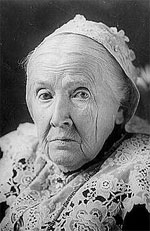

|

|

|
|
|
Julia Ward Howe was a poet, lecturer, abolitionist, and
advocate for women's rights, but she is best remembered for
writing the song "Battle Hymn of the Republic".
Howe was born into a respected family, descended from
Revolutionary War heroes and Rhode Island governors. She
lost her mother at a young age, but enjoyed the benefits of
a privileged upbringing. She threw herself wholeheartedly
into her studies, as well as a social life that included
visits to and from many noted authors, politicians, and
scholars. While still very young, Howe began her career as
an author, publishing several articles and reviews.
She married Dr. Samuel Howe in 1843. The couple made
their home at an estate Howe called "Green Peace" in Boston,
where she had six children. The Howes were actively involved
in the abolitionist movement and edited an anti-slavery
newspaper. Dr. Howe disapproved of his wife's writing,
however, and to try to hide it from him she began to publish
anonymously. In 1854, he discovered that she was the author
of Passion Flowers, her first full volume of poems. The
couple separated soon after, although they never divorced.
In 1861, Howe wrote the "Battle Hymn of the Republic"
after a friend suggested that she compose "good words" for
the tune of "John Brown's Body," which was already a very
popular song. As Howe described it afterward, she awoke in
her room at Willard's Hotel in the nation's capital with the
words in her head. Getting up, she "began to scrawl the
lines almost without looking." She then went back to sleep,
"but not without feeling that something important had
happened to me."
The "Battle Hymn of the Republic" was published in 1862.
Chaplain Charles McCabe became linked with the poem, singing
it before President Lincoln and at many public occasions.
It continued to grow in popularity long after the war had
ended, and is as well known to day as it was in the 1860s.
After the Civil War, Howe became active in the struggle
for women's voting rights. The war, she said, had "brought
many of us out of the ruts of established ways" and "forced
us to take a larger outlook into the possibilities of the
future." Howe founded and led several women's
organizations, on both the local and national level. She
continued to write, travel, and speak on many issues. Her
prominence led to her being the first woman elected to the
American Academy of Arts and Sciences, in 1908. Howe served
only briefly before dying in 1910 at the age of 91.
Source: Joan Waugh, ed., Facts on File Encyclopedia of American
History: Civil War and Reconstruction, 1856 to 1869 (New York: Facts on
File, 2003), 174.
|